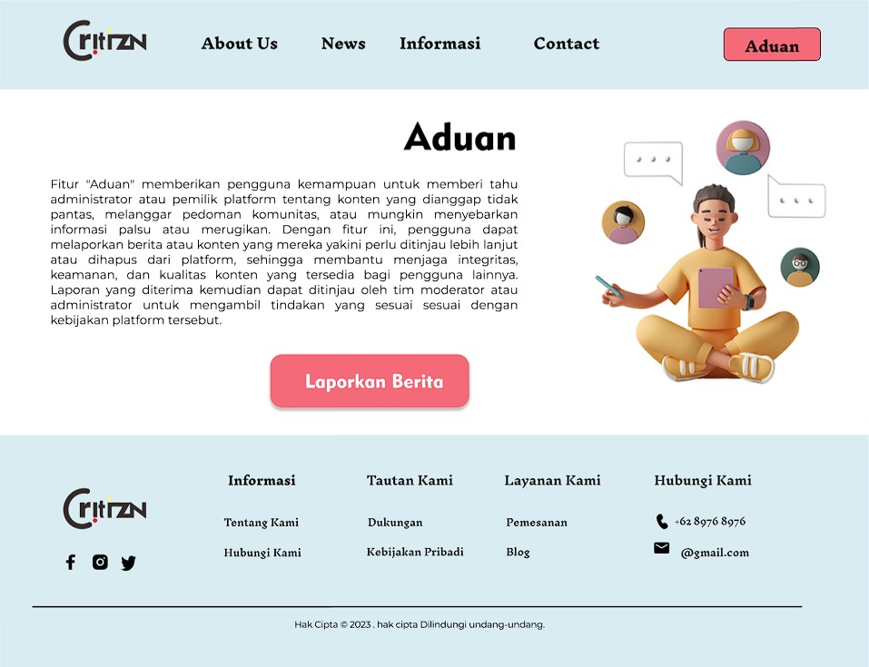

Critizen

Dalam pembuatan website berita bernama Critizen menggunakan React.js dan Tailwind CSS, fokus utama kami adalah membangun Minimum Viable Product (MVP) yang mencakup fitur aduan. Kami bertujuan untuk menciptakan platform yang interaktif dan mudah digunakan bagi pengguna untuk mengakses berita terkini serta memberikan mereka kemampuan untuk memberikan aduan terhadap berbagai peristiwa atau topik yang mereka temui. Dengan kombinasi React.js untuk antarmuka pengguna yang dinamis dan Tailwind CSS untuk desain yang cepat dan responsif, Critizen akan menjadi tempat yang ideal bagi pengguna untuk terhubung, berbagi, dan memengaruhi pemberitaan yang ada.